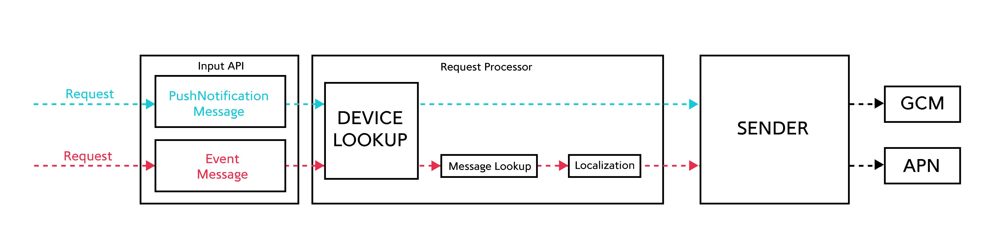
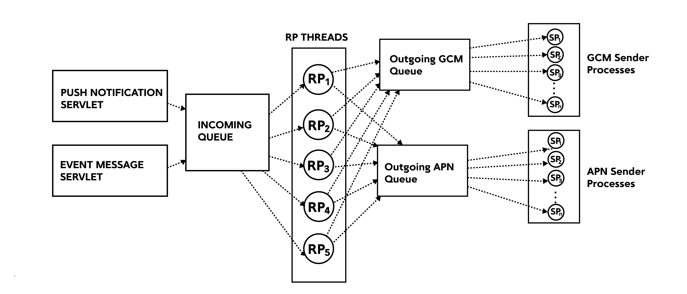

Getting started
Introduction
Pushkin is a free open source tool for sending push notifications. It was developed with a focus on speed and enabling fast experimentation. Pushkin was mainly built for supporting online mobile games, but can easily be extended to any type of application. It supports both Android and iOS platforms.
Pushkin is designed to be a responsive tool. You can design your systems around Pushkin so it reacts to your game server, database server, client or really any service that can send a HTTP POST request. It is also easily scalable, because you can run as many Pushkin instances as you want. One instance is capable of pushing 500 messages per second.
Pushkin has the MIT license.
Use cases
To fit all use cases, Pushkin has 2 modes of operations:
-
Push Notification mode - You can issue a direct notification, meaning that you supply the user and the message. Pushkin will find the device id for the user and send the message. This is the simplest use case.
-
Event mode - You can send Pushkin an event, notifying it that something happened to a certain user. Pushkin will then decide whether it can send a notification based on that event or not. If yes, Pushkin will construct the message in the proper language for the user (localization is supported), find the device id of the user mobile device and send the notification.
These two use cases can be seen on the diagram below:

Quick start
Step 0 - Requirements
In order to run Pushkin you must have Python2.7, pip2.7, PostgreSQL 9.2+ installed and setup. Also you will need Postgres hstore extension in pushkin database.
Example on CentOS:
yum install python27 python27-devel python27-pip python27-psycopg2 postgresql92-server postgresql92-devel postgresql92-contrib
In case of a problem with Postgres, detailed instructions can be found on Postgres Wiki.
Step 1 - Installation
There are 2 ways to install Pushkin:
Using pip:
pip install pushkin
From source:
Clone Pushkin git repo:
git clone https://github.com/Nordeus/pushkin.git
cd pushkin
It will be cloned to a subdirectory called pushkin.
Make sure to place it in some permanent location, as for an editable installation, Python will import the module directly from this directory and not copy over the files.
To install Pushkin run:
python setup.py install
Pushkin is then ready to use.
Step 2 - Setup database
Before starting Pushkin you should run the tests to make sure everything works
fine. Requirements before running tests are to make a database pushkin which is
owned by user pushkin which has a password pushkin (defined in tests/test_config.ini) and to load SQL schema.
You will also need to install the hstore extension.
psql -U postgres -c "CREATE USER pushkin WITH PASSWORD 'pushkin'"
psql -U postgres -c "CREATE DATABASE pushkin WITH OWNER pushkin"
psql -U postgres -d pushkin -c "CREATE EXTENSION HSTORE"
You can initiate the testing by executing:
python -c 'import pushkin; pushkin.run_tests()'
If tests pass, Pushkin is installed correctly.
Step 3 - Setup certificates
Before you start sending notifications, you will need Google Cloud Messaging (GCM) and Apple Push Notification Service (APN) certificates.
You can see how to obtain these certificates on Setup Certificates page.
Step 4 - Starting Pushkin
To start Pushkin you will need config.ini file. You can find example on GitHub.
If you are starting Pushkin for the first time you should initialize the database which you created in Step 2 with the following command:
pushkin --configuration config.ini --upgrade-db
It is recommended that you also run this command every time you update Pushkin, since it could happen that database is changed.
Now you can start Pushkin:
pushkin --configuration config.ini
Pushkin log is located by default in /var/log/pushkin/pushkin.log. Default log level is INFO, you can change it in config.ini file.
Sent notifications are logged in file /var/log/pushkin/notification/notification.csv by default.
Design and Features
Pushkin was designed with scalability and modularity in mind. We chose to build Pushkin in Python because it is a very popular language, easy to use, easy to learn and has good performance.
Internally, you can divide Pushkin into multiple modules.
-
Input Servlets
Input servlets take care of all incoming requests. There are 2 types of servlets in Pushkin, event message and push notification servlets. -
Incoming queue
When servlets process incoming requests, they are dispatched into a queue where they will be picked up by request processing threads. -
Request processor
Request processor manages all incoming requests. It processes them and depending on request type, it constructs the message, localizes it, finds the user device or stores it and in the end it can dispatch an outgoing message to GCM or APN queues. -
Outgoing queues
There are two outgoing queues in Pushkin. GCM and APN queues schedule Android and iOS push notifications, respectively. -
Sender processes
Sender processes are in charge of dispatching messages that are coming in from the outgoing queues

Pushkin has some cool features that you can take advantage of, if you choose to use Pushkin in event mode. In that mode, for every new message you create, you must specify an event that will trigger that message. Features you can use then are cooldown, localization and deep linking.
Cooldown - To prevent accidentally spamming your users, for every message you can specify a cooldown interval. This will prevent Pushkin from sending the same message to the same user twice in that interval, even if it receives appropriate events. For example, if you receive a notification which has a cooldown interval of 2 hours at 6pm, you cannot receive the same notification again until at least 8pm.
Deep linking - If you have deep linking implemented on your client application, Pushkin enables you to define a deep link for every message.
Localization - Once you create a new message, you can add multiple versions of that message in different languages. In special login events, which are sent upon every user login to your application, Pushkin will receive the language a user uses. Upon receiving an event that will generate a message, Pushkin will pick the one that is written in the same language the user uses.
API
Database API
Pushkin stores data about users, devices and messages in PostgreSQL database. There is a database module with functions which should cover most use cases like adding messages or updating device data. For advanced usage of database ORM model for SQLAlchemy is available.
Prerequisites for using Database API
# you should first install and setup Pushkin
from pushkin.database import database
from pushkin import context
# update path to config.ini if you installed Pushkin in different directory
context.setup_configuration('/opt/pushkin/config.ini')
database.init_db()
Messages and localizations
Pushkin has two entities for working with notifications - message and localization. Message contains common data for a message and localization takes care of translation of a message into various languages.
Message is identified by its name, which is unique for every message. Besides name message has following data available through ORM model:
-
trigger_event_id- event which triggers a message (int) -
cooldown_ts- minimum interval in milliseconds for sending the same notification twice, to avoid spam (int, optional) -
screen- landing screen after opening notification (str, optional) -
expiry_millis- maximum interval in milliseconds to wait for delivering notification, when device is offline (int, optional) -
localizations- list of localizations of a message
MessageLocalization has translations for messages. Following data is available through ORM model:
-
language_id- language of a message, identified the same as in your application (int) -
message_title- message title in specific language, you can use parameters from event specified in curly brackets -
message_text- message text in specific language, you can use parameters from event specified in curly brackets -
message- message entity
Example of adding a message into database
database.add_message('test_message', 1, 'English title', 'English message', trigger_event_id=1)
database.add_message('test_message', 2, 'Deutsch Titel', 'Deutsch Nachricht', trigger_event_id=1)
Logins and devices
Pushkin has two entities for working with user data - login and device. Login contains common data for a user and device has data of all devices.
Login is identified by id of the user, as in your application. Login id must be of type integer. Besides id, login has following data about user available through ORM model:
-
language_id- language in which the user uses your application, which is identified the same as in your application (int) -
devices- list of devices which the user uses for your application
Device entity represents devices which a user uses for your application. Following data is available through ORM model:
-
platform_id- platform of a device, currently available platforms are- Android Phone = 1
- iPhone = 2
- iPad = 5
- Android Tablet = 6
(int)
-
device_token- identifier of a device at push notification service (GCM or APN) -
device_token_new- in case device_token changes for a device (which happens on Android platform) new one is stored here -
application_version- version of your application installed on a device -
unregistered_ts- timestamp when device stopped receiving notifications -
login- login entity
Example of adding login and device data into the database
database.process_user_login(login_id=12345, language_id=1, platform_id=1, device_token='123', application_version=1)
Database module
Database module consists of ORM model for SQLAlchemy and wrapper functions. Wrapper functions can be used to load, update or delete data from database. ORM model uses lazy loading approach, while wrapper functions use eager loading approach. Objects returned by wrapper functions has all fields and many to one relationships preloaded. One to many relationships can be loaded with specific functions.
- Get SQLAlchemy session.
pushkin.database.get_session()
- Get device tokens for a given login.
pushkin.database.get_device_tokens(login_id)
- Update canonical data for android devices.
pushkin.database.update_canonicals(canonicals)
- Update data for unregistered Android devices. Unregistered device will not receive notifications and will be deleted when number of devices exceeds maximum.
pushkin.database.update_unregistered_devices(unregistered)
- Add or update device and login data. Also deletes oldest device if number of devices exceeds maximum.
process_user_login(login_id, language_id, platform_id, device_token, application_version)
- Add or update a login entity. Returns new or updated login.
upsert_login(login_id, language_id)
- Add or update a device entity. Returns new or updated device with relation to login preloaded.
upsert_device(login_id, platform_id, device_token, application_version, unregistered_ts=None)
- Get the list of all logins
get_all_logins()
- Get a specific login by id.
get_login(login_id)
- Get devices of a specific login.
get_devices(login)
- Delete a specific login together with all devices of that user.
delete_login(login)
- Delete a specific device.
delete_device(device)
- Get message localization for the language of a specific user.
get_localized_message(login_id, message_id)
If translation for the language of a user doesn't exist English translation is given.
- Add or update a message. Returns new or updated message.
upsert_message(message_name, cooldown_ts, trigger_event_id, screen, expiry_millis)
- Add or update message localization.
upsert_message_localization(message_name, language_id, message_title, message_text)
- Add or update a message localization. Returns new or updated localization with relation to message preloaded.
add_message(message_name, language_id, message_title, message_text, trigger_event_id=None, cooldown_ts=None, screen='', expiry_millis=None)
- Get the list of all messages from database.
get_all_messages()
- Get a specific message.
get_message(message_name)
- Get all localizations for a specific message.
get_message_localizations(message)
- Delete a specific message with all localizations.
delete_message(message)
- Delete a specific message localization.
delete_message_localization(message_localization)
- Return a mapping of event ids to messages ids in format
{event_id: [message_ids]}.
get_event_to_message_mapping()
- Update the last time a message id was send for a user.
get_and_update_messages_to_send(user_message_set)
Expects a set of (login_id, message_id) tuples.
Input API
Introduction
Pushkin supports two ways for sending push notifications - through notification and event API. Notification API is simpler to use and useful if you just want a quick and dirty way to send some push notifications quickly. Event API is where the full power of Pushkin is utilized - it allows you to decouple triggers for notifications from concrete notifications you want to send so you can configure your messages without having to change your main application. It also provides a monitoring set of methods which are useful in production environments when you want to monitor how your instances are doing under heavier loads.
Format
Pushkin uses HTTP POST requests for notification and event APIs and HTTP GET for monitoring API. Protocol Buffers and JSON are currently supported, but it is easy to extend to any other format in the future.
API URLs
All the URLs in the following documentation are the default ones. You can change these URLs of their respective handlers by modifying config.ini file.
Notification API
Method: POST
JSON endpoint: http://localhost:8887/post_notification_json
Format:
{
"notifications": [
{
"login_id" : <unique-user-id>,
"title" : "<notification-title>",
"content" : "<notification-content>",
"screen" : "<screen>"
}
]
}
Protobuf endpoint: http://localhost:8887/post_notification_proto
Format:
message PushNotification {
optional int64 login_id = 1;
optional string title = 2;
optional string content = 3;
optional string screen = 4;
}
message BatchNotificationRequest {
repeated PushNotification notifications = 1;
}
Field description:
-
notifications- a list of notifications to send. If you want to send multiple messages at once, it is more efficient to batch them in a single request. -
login_id- Unique user identifier. A message sent to a user will be sent to all his devices. Required. -
title- Title of push notification. Required. -
content- Content of push notification. Required. -
screen- A code string sent to devices. Can be used to map push notification to a click action on client side. Optional.
Notes:
Be careful about correct JSON syntax! For example, it is important to quote string fields and to leave numeric fields unquoted. Refer to the example for a quick check.
It is required to register devices to recipient user first. This can be done either through database API or by sending login events through event API.
Notification API does not take user's language into consideration as you specify concrete message content to be sent.
Example:
Send two notifications in a single batch
JSON string
{
"notifications": [
{
"login_id" : 1337,
"title" : "Hi User1",
"content" : "Sent from Pushkin",
"screen" : "welcome_screen"
},
{
"login_id" : 1338,
"title" : "Hi User2",
"content" : "Also sent from Pushkin"
}
]
}
Protobuf request from Python2.7
from pushkin.protobuf import PushNotificationMessage_pb2
notification_request_proto = PushNotificationMessage_pb2.BatchNotificationRequest()
notification1 = notification_request_proto.notifications.add()
notification1.login_id = 1337
notification1.title = "Hi User1"
notification1.content = "Sent from Pushkin"
notification1.screen = "welcome_screen"
notification2 = notification_request_proto.notifications.add()
notification2.login_id = 1338
notification2.title = "Hi User2"
notification2.content = "Also sent from Pushkin"
request = notification_request_proto.SerializeToString()
Event API
Method: POST
JSON endpoint: http://localhost:8887/post_events_json
Format:
{
"events": [
{
"user_id" : <unique-user-id>,
"event_id" : <event-id>,
"timestamp" : <unix-timestamp-milliseconds>,
"pairs": {
"<key1-name>" : "<value1-name>",
"<key2-name>" : "<value2-name>",
}
}
]
}
Protobuf endpoint: http://localhost:8887/post_events_proto
Format:
message Event {
optional int64 user_id = 1;
optional int32 event_id = 2;
optional int32 event_type = 3;
optional int64 timestamp = 4;
message Pair {
required string key = 1;
required string value = 2;
}
repeated Pair pairs = 5;
}
message BatchEventRequest {
repeated Event events = 1;
}
Field description:
-
events- a list of events to send. If you want to send multiple events at once, it is more efficient to batch them in a single request. -
user_id- Unique user identifier of the event. Required. -
event_id- Unique integer identifier of the event. Required. -
event_type- Not used currently. Optional. -
timestamp- Unix timestamp in milliseconds when the event happened. Required. -
pairs- Key/value pairs used to parametrize the event.-
You can define custom parameters which can be used in localization. Allowed characters for parameter name are letters of English alphabet, digits and underscore. You can reference parameters by putting them in curly brackets.
-
Some parameters are required in predefined events.
-
Predefined events
Pushkin defines prebuilt events which you can use immediately. Those are events in range 4000-4999 and you should not define custom events in this range. List of prebuilt events:
Login event
Used to register a device to a specific user. It also keeps track of user details. It is required to send this predefined event in order to enable Pushkin to work.
-
Event ID: 4001
-
Key/Value pairs definition:
-
languageId- A number representing a language. It is up to you to keep track of those language ids and map them however you want. When a message is triggered by an event, a notification with corresponding language id will be sent to the user. Updated to the value of last login event. Required. -
platformId- An identifier indicating the platform of the device. Currently supported platforms are:- Android Phone = 1,
- iPhone = 2,
- iPad = 5,
- Android Tablet = 6.
Required.
-
deviceToken- Token string for sending push notifications to this device. Can be found in the documentation of Android (GCM) / iOS (APN) push notification service provider. Required. -
applicationVersion- Integer value of the current version of the application. For future use. Optional.
-
Example:
JSON request
{
"events": [
{
"user_id" : 1338,
"event_id" : 4001,
"timestamp" : 1458823448000,
"pairs": {
"languageId": "1",
"platformId" : "1",
"deviceToken" : "VD3#fd4",
"applicationVersion" : "1"
}
}
]
}
Turn off notification (blacklist) event
Used to switch off sending of notifications for a certain user. Every event should is treated like a snapshot of blacklisted messages, there no updates, every new blacklist event overrides the one before it.
- Event ID: 4006
- Key/Value pairs definition:
Pair values should be the message ids that should be blacklisted. The concrete values for keys in this case are not important.
Example:
JSON request
{
"events": [
{
"user_id" : 1338,
"event_id" : 4006,
"timestamp" : 1458823448000,
"pairs": {
"blacklist1": 1,
"blacklist2": 2
}
}
]
}
Event that triggers notification
Used to trigger notification for a specific user. It is required that Pushkin knows about a user, which means that it received Login event for that user before.
-
Event ID: any integer which is not reserved (you can choose any number for custom events outside of range
4000-4999) -
Key/Value pairs definition (optional):
- You can define custom parameters which can be used in localization.
Example:
Database API
database.add_message('example_message', 1, 'title', 'text {param}', 1001)
JSON request
{
"events": [
{
"user_id" : 1338,
"event_id" : 1001,
"timestamp" : 1458823448000,
"pairs": {
"param" : "param value"
}
}
]
}
Notes:
Be careful about correct JSON syntax! For example, it is important to quote string fields and to leave numeric fields unquoted. Refer to example for a quick check.
It is required to register devices to recipient user first. This can be done either through database API or by sending login events through event API.
Event API takes user's current language id into consideration and will messages with the same localization id.
Send multiple events in a single request
Pushkin has support for batching multiple events in a single request.
Example (send two events in a single batch):
JSON String
{
"events": [
{
"user_id" : 1337,
"event_id" : 1,
"timestamp" : 1458823445000
},
{
"user_id" : 1338,
"event_id" : 4001,
"timestamp" : 1458823448000,
"pairs": {
"languageId": "1",
"platformId" : "1",
"deviceToken" : "VD3#fd4",
"applicationVersion" : "1"
}
}
]
}
Protobuf request from Python2.7
from pushkin.protobuf import EventMessage_pb2
event_request_proto = EventMessage_pb2.BatchEventRequest()
event1 = event_request_proto.events.add()
event1.user_id = 1337
event1.event_id = 1
event1.timestamp = 1458823445000
login_event = event_request_proto.events.add()
login_event.user_id = 1337
login_event.event_id = 4001
login_event.timestamp = 1458823448000
# add some parameters
pair = event_proto.pairs.add()
pair.key = 'languageId'
pair.value = '1'
pair.key = 'platformId'
pair.value = '1'
pair = event_proto.pairs.add()
pair.key = 'deviceToken'
pair.value = 'VD3#fd4'
pair = event_proto.pairs.add()
pair.key = 'applicationVersion'
pair.value = '1'
request = event_request_proto.SerializeToString()
Monitoring API
Method: GET
Endpoint: http://localhost:8887/get_request_queue
Notes:
Returns the number of items in the request queue. Requests are events and push notifications requests that are waiting to be transformed to concrete push notifications. Default maximum is 50000, anything above will be discarded.
Endpoint: http://localhost:8887/get_apn_sender_queue
Notes:
Returns the number of items in APN (iOS) queue. Those are APN push notifications waiting to be sent. Default maximum is 50000, anything above will be discarded.
Endpoint: http://localhost:8887/get_gcm_sender_queue
Notes:
Returns the number of items in GCM (Android) queue. Those are APN push notifications waiting to be sent. Default maximum is 50000, anything above will be discarded.
Configuration
Pushkin is configured through .ini file in root folder.
Here is a list of configurations along with comments and default values:
[ServerSpecific]
# Name of your application
game = GameName
# Id of pushkin instance
world_id = 1
# Default API port
port = 8887
[Messenger]
# if true, gcm clients will not receive notifications
dry_run = false
# max batch size for apn notifications
apns_batch_size = 500
apns_certificate_path = <ABSOLUTE-PATH-TO-APN-CERTIFICATE-HERE>
gcm_access_key = <YOUR-GCM-KEY-HERE>
# for future use
apns_sandbox = false
connection_error_retries = 3
# Baselink for your application sent with push notifications
base_deeplink_url = application_name.com
[RequestProcessor]
# queue limit for requests processor. See Monitoring API for reference
queue_limit = 50000
# Number of threads for request processor
request_processor_num_threads = 10
[Sender]
# queue limit for sender processor. See Monitoring API for reference
sender_queue_limit = 50000
# interval for batching apn messages
apn_sender_interval_sec = 3
apn_num_processes = 10
gcm_num_processes = 30
[Log]
# log configuration
main_logger_name = pushkin
notifications_logger_name = notifications
main_log_path = /var/log/pushkin/
notification_log_path = /var/log/pushkin/notification/
# notset, debug, info, warning, error, critical
main_log_level = INFO
keep_log_days = 7
[Database]
# database credentials
db_user = pushkin
db_name = pushkin
db_pass = pushkin
db_pool_size = 2
max_devices_per_user = 10
[Event]
# event id of prebuilt login event
login_event_id = 4001
turn_off_notification_event_id = 4006
[RequestHandler]
# URLs for all request handlers
proto_event_handler_url = /post_events_proto
proto_notification_handler_url = /post_notification_proto
json_event_handler_url = /post_events_json
json_notification_handler_url = /post_notification_json
request_queue_handler_url = /get_request_queue
apn_sender_queue_handler_url = /get_apn_sender_queue
gcm_sender_queue_handler_url = /get_gcm_sender_queue
Support
You can ask questions and join the development discussion on the Pushkin-Dev Google group.